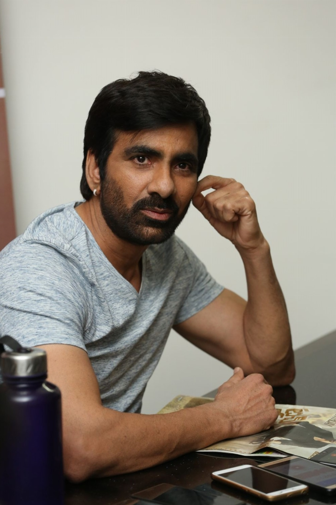

ABOUT:

Ravi Shankar Raju Bhupatiraju (born 26 January 1968), better known by the stage name Ravi Teja,
is an Indian actor who predominantly works in Telugu cinema. Known for his roles in action comedy films,
Teja has appeared in over 70 films and is one of the highest paid actors in Telugu film industry.
He won the Nandi Special Jury Award in 1999 and 2002 for his performance in the films Nee Kosam (1999) and Khadgam (2002) and also won the Nandi Award for Best Actor for Neninthe in 2008. He is known for his collaborations with director Puri Jagannadh which turned out to be major breakthroughs in his career. He first appeared in the Telugu film Karthavyam (1990), and subsequently played supporting roles in films such as Allari Priyudu (1993), Ninne Pelladata (1996) and Sindhooram (1997) among others. Teja has also worked as an assistant director for several films. Teja began his professional career as a lead actor with Nee Kosam in 1999 went on be starred in films such as Itlu Sravani Subramanyam (2001), Avunu Valliddaru Ista Paddaru! (2002), Idiot (2002), Khadgam (2002), Amma Nanna O Tamila Ammayi (2003), Venky (2004), Naa Autograph (2004), Bhadra (2005), Vikramarkudu (2006), Dubai Seenu (2007), Krishna (2008), Neninthe (2008), Kick (2009), Shambo Shiva Shambo (2010), Don Seenu (2010), Mirapakay (2011), Balupu (2013), Power (2014), Bengal Tiger (2015), Raja the Great (2017), and Krack (2021). In 2012, he was listed as 50th in the Forbes India list of top 100 Celebrities with an annual income of ₹15.5 crore (US$2.2 million). In 2013 he was in 68th position with earnings of ₹13 crore (US$1.8 million).
In 2015 he was i.
| {kind=link}
{kind=link}
{kind=link}